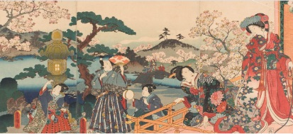
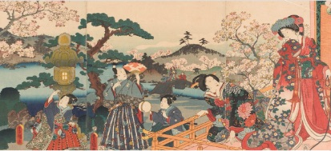

Clothing
It’s spring, and the cherry blossoms are in full bloom! Some people in Edo reserved different patterns and colours for specific seasons. What would you choose to wear? Pick your spring-appropriate outfit to fit right into the scene on this print.